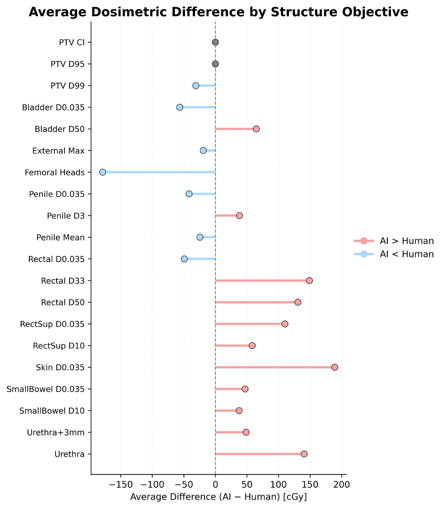
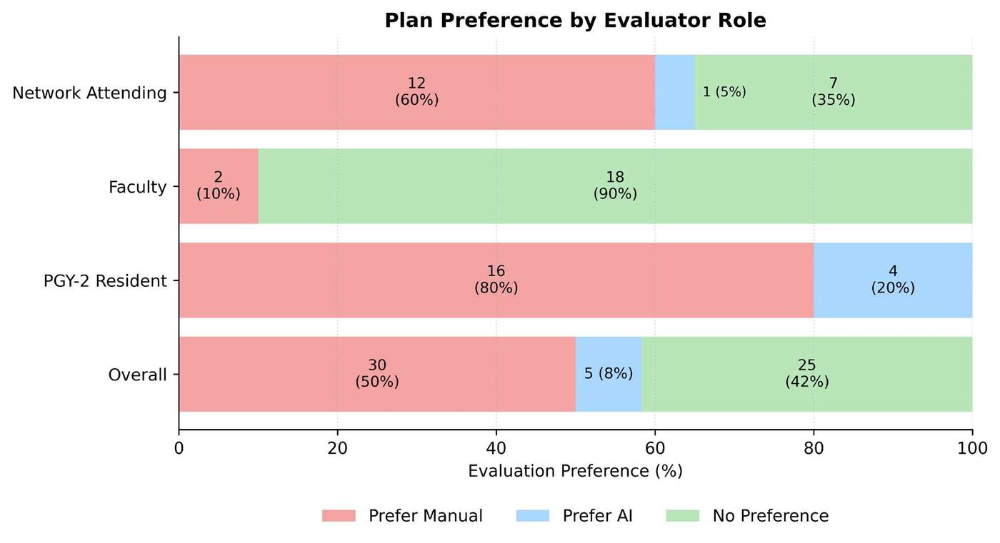

Clinical Validation of Commercial AI Prostate SBRT Planning
Dosimetric equivalence with manual plans, with the deficiencies isolated to institution-specific organ-at-risk objectives.
Nayoon J. Lee, Steven Philbrook, MS, William R. Green, MD, Eva Berlin, MD, John Chojnowski, MD, PhD, Nicholas Molina, Jonathan Cheng, Sara Arias-Obando, Rafe McBeth, PhD
Penn Medicine, Department of Radiation Oncology
Scientific poster on Monday, October 26, 12:15 to 1:00 PM ET, in the Commons outside the Arthur H. Rubenstein Auditorium
The last mile
Commercial AI planning systems reach clinically acceptable quality and cut planning time, but they are trained on generalized objectives that often miss an institution's own organ-at-risk priorities and contouring conventions. We tested whether those gaps come from missing institutional knowledge rather than from the algorithm, and whether a lightweight institutional model could close them.
What we did
- Replanned 23 prostate SBRT cases (40 Gy in 5 fractions) with a commercial AI system trained on a 36.25 Gy in 5 fractions regimen, on the same CT and structure sets as the approved clinical plans, normalized to D95% = 100%.
- Compared PTV D95% and D99%, the Paddick conformity index and our institutional organ-at-risk constraints for the urethra, bladder, rectum, femoral heads, penile bulb and skin.
- Ran a blinded A/B preference test on 20 cases with 3 physicians.
- Checked five AI plans with gamma-based QA at 2%/2 mm.
- Benchmarked a separate model, trained on 21 institutional cases with our bowel constraints prioritized, against the commercial one.
What we found
- <10 minper AI plan, always with 2 arcs (manual plans used 2 or 3) and an average of 438 fewer monitor units. Every AI plan met PTV D95%, with comparable conformality.
- 99.2%of DVH objectives met by the AI plans when the urethra is excluded (390 of 393), and 93.5% with it. The violations sat mostly in urethral D0.035cc (mean excess about 101 cGy), an objective left out of the vendor's training.
- 0 of 60blinded evaluations rated a plan unacceptable. Where reviewers stated a preference, 86% chose the manual plan; 42% of evaluations stated none.
- 100%gamma pass rate (2%/2 mm) in QA of five AI plans.
- 84 cGyThe in-house model matched target coverage, with CTV D99% within 84 cGy, and spared bowel better than the commercial model.


What it means
Commercial AI planning for prostate SBRT generalizes safely across regimens and comes close to clinical equivalence with manual planning. What remains is in the institutional objectives the vendor never saw, not in the optimizer. A lightweight model trained on 21 cases closed that gap, which makes institutional data the limiting factor for clinical readiness.
That gives us a data-efficient way to adapt a commercial planning system to local protocols without retraining it from scratch.
Write to Rafe McBeth at rafe.mcbeth@pennmedicine.upenn.edu.
Also from our lab
Spinning the Data Engine: a review portal for curating training data and running blinded AI-versus-physician comparisons. AI Builder Showcase video, playing in the Commons.
Beyond Deployment: continuous quality assurance for auto-segmentation models once they are live. Live demo on Monday, October 26, 4:30 to 6:00 PM ET, Arthur H. Rubenstein Auditorium.